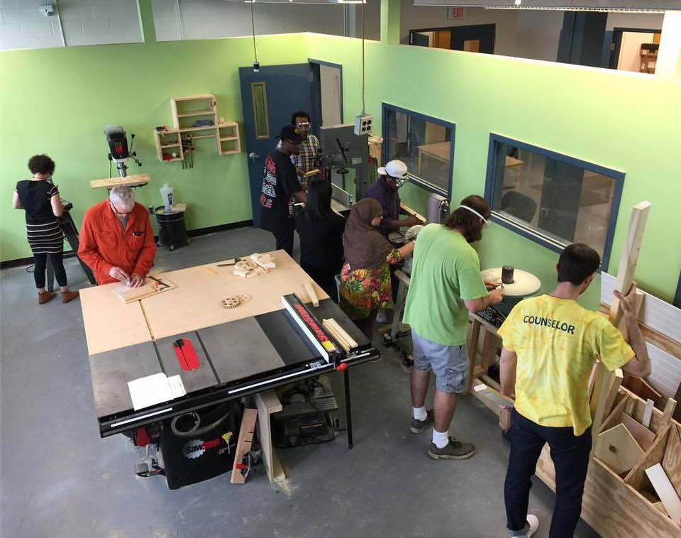
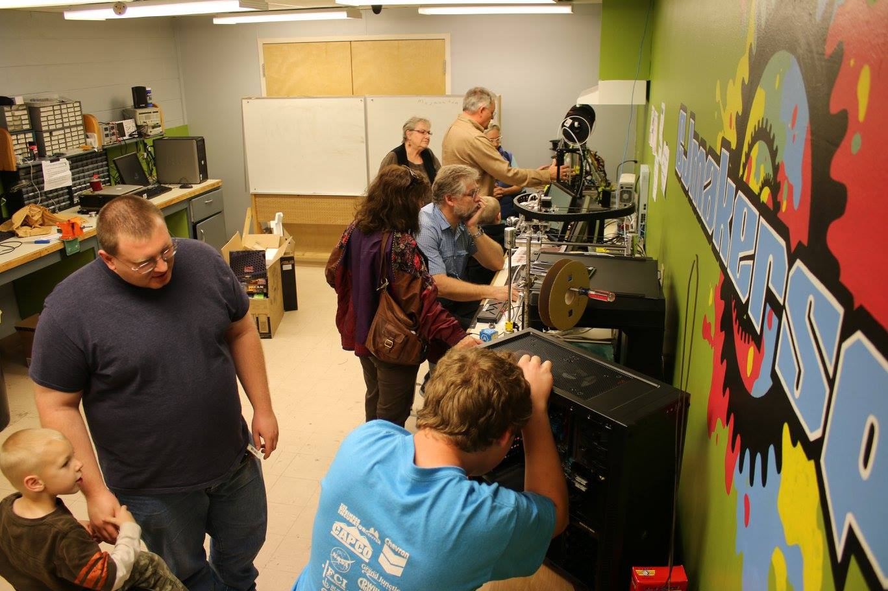

|  |
A makerspace is a collaborative work space inside a school, library or separate public/private facility for making, learning, exploring and sharing that uses high tech to no tech tools. These spaces are open to kids, adults, and entrepreneurs and have a variety of maker equipment including 3D printers, laser cutters, cnc machines, soldering irons and even sewing machines. A makerspace however doesn’t need to include all of these machines or even any of them to be considered a makerspace. |
| If you have cardboard, legos and art supplies you’re in business. It’s more of the maker mindset of creating something out of nothing and exploring your own interests that’s at the core of a makerspace. These spaces are also helping to prepare those who need the critical 21st century skills in the fields of science, technology, engineering and math (STEM). They provide hands on learning, help with critical thinking skills and even boost self-confidence. Some of the skills that are learned in a makerspace pertain to electronics, 3d printing, 3D modeling, coding, robotics and even woodworking, Makerspaces are also fostering entrepreneurship and are being utilized as incubators and accelerators for business startups. There have already been some amazing success stories that have come out of makerspaces to date. |  |